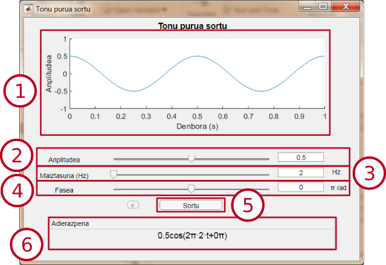
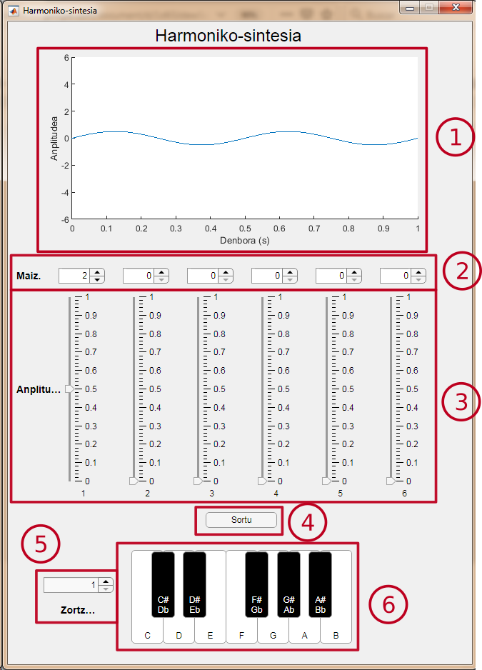
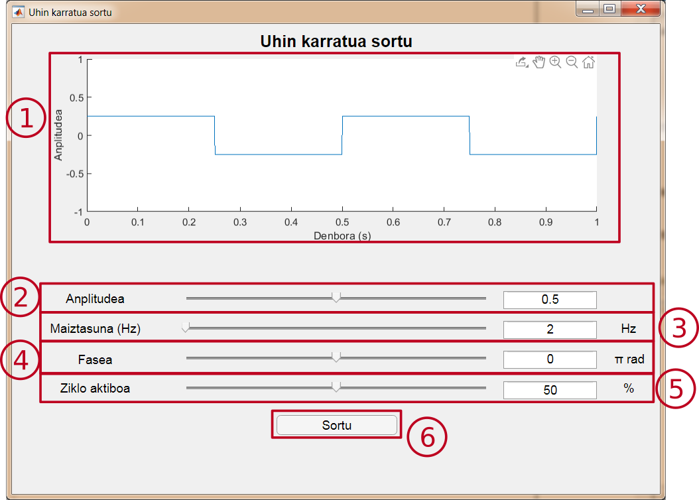
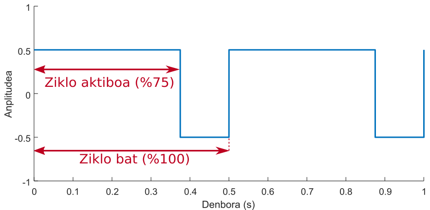
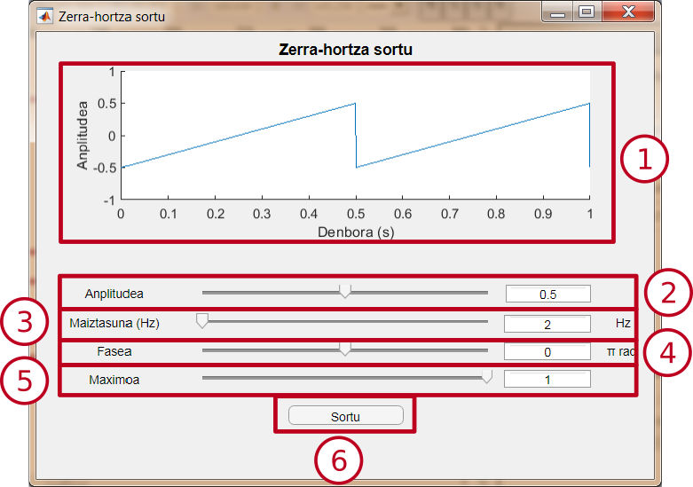
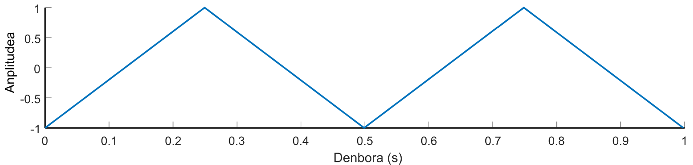
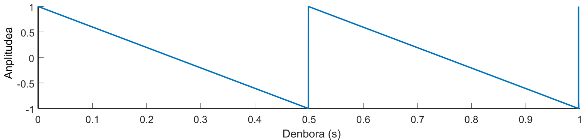
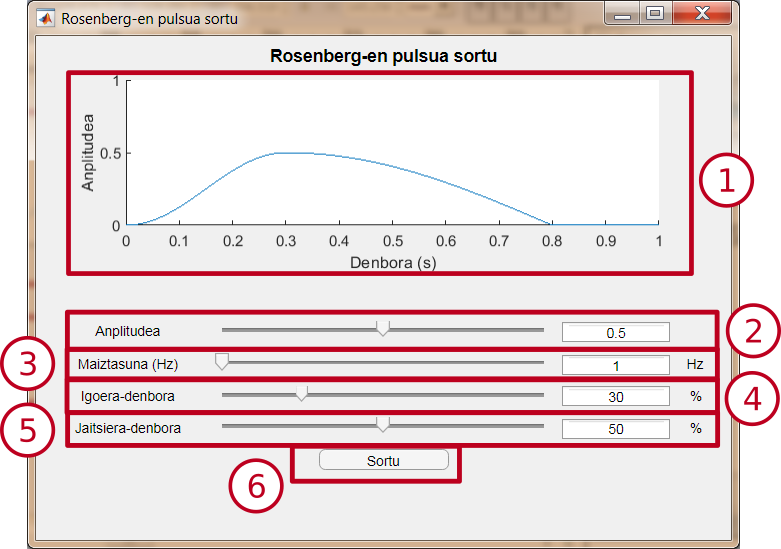
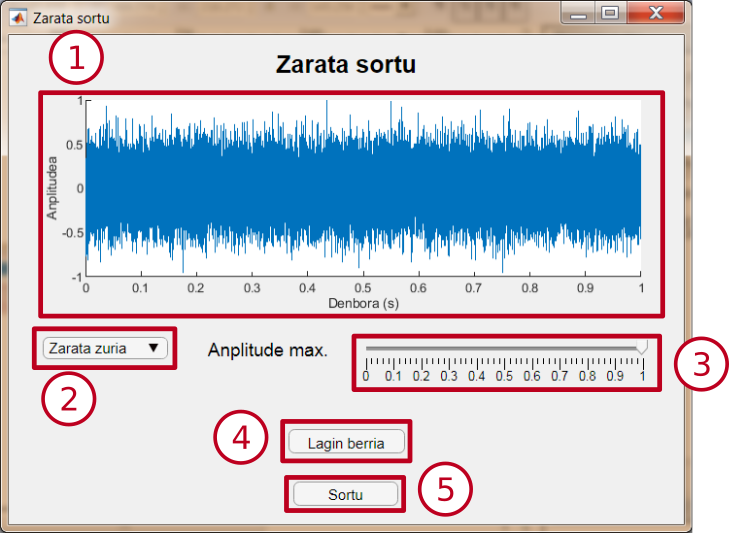
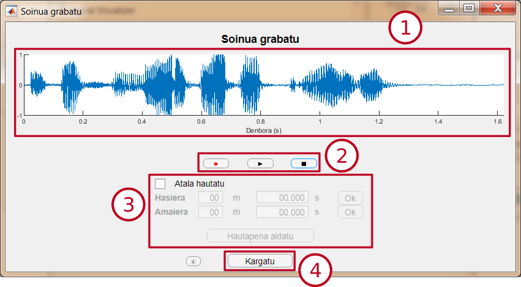

Tonu purua sortu
Modulo honek segundo bateko iraupeneko tonu puru bat sortzen du. Anplitudea, maiztasuna eta fasea.
Interfazea

- Aurrebista-leihoa: Modulua sortuko duen seinalea aurreikupena erakusten du. Parametro baten balioa aldatzean eguneratzen da.
- Amplitude-hautagailua: Cosinuaren amplitudea 0-ren eta 1-ren artean hautatzea ahalbidetzen du. Balioa kursorea mugitzen edo testu-kutxaren balioa aldatzen hautatu ahal da.
- Maiztasun-hautagailua: Cosinuaren maiztasuna Hertz bat eta 20000 Hertzen artean hautatzea ahalbidetzen du. Balioa kursorea mugitzen edo testu-kutxaren balioa aldatzen hautatu ahal da.
- Fase-hautagailua: Cosinuaren fasea −π y π radianen artean hautatzea ahalbidetzen du. Balioa kursorea mugitzen edo testu-kutxaren balioa aldatzen hautatu ahal da.
- "Sortu" botoia: Bistaratze-leiho berri bat irekitzen du, hautatutako parametroekin sortutako seinale bat, segundu bateko iraupena duena, aztertzeko.
- Adierazpena: Seinalearen adierazpen matematikoa erakusten du, hautatutako parametroekin. Parametro baten balioa aldatzean eguneratzen da.
Tonu purua
Tonu puru bat seinale sinusoide bat da, maiztasun bakarra duena. Modulu honetan sortzen da cosinu funtzioa erabiliz, eta hurrengo formularekin adierazten da:
A cos(2πft + 𝜙),
non A anplitudea, f maiztasuna eta 𝜙 fasea den.
- Anplitudea: Seinalearen gehienezko balioa da.

|
Adibide honetan anplitudea 0.5 da. |
- Maiztasuna: Denbora tarte batean seinale-ziklo oso bat zebat aldiz errepikatzen den adierazten du. Hertzetan neurrituta, segundu batean seinale-ziklo baten errepikapen kopurua.

|
Adibide honetan maiztasuna 2 Hz-ekoa da. |
- Fasea: Cosinuaren desplazamendua. Radianetan neurtzen da, seinale-ziklo oso bat 2π radian izanez.

|
Adibide honetan seinalea ziklo ¼-a desplazatuta dago. Beraz, fasea π/2 rad-ekoa da. |
Harmoniko-sintesia
Modulu honek sei tonu puru gainjarri arte sortu ahal ditu, bakoitzak maiztasun eta anplitude ezberdinarekin. Azpialdeko teklatuarekin nota bat aukeratu ahal da, bere lehenengo sei harmonikoak ikusteko.
Interfazea

- Aurrebista-leihoa: Modulua sortuko duen seinalea aurreikupena erakusten du. Parametro baten balioa aldatzean eguneratzen da.
- Maiztasun-hautagailua: Sei osagai bakoitzaren maiztasuna hautatzea ahalbidetzen du. Hautatzeko, testu-kutxaren barnean idatzi edo gezien gainean klik egin ahal da.
- Anplitude-hautagailua: Sei osagai bakoitzaren anplitudea hautatzea ahalbidetzen du. Kursorea mugituz hautatu ahal da.
- "Sortu" botoia: Bistaratze-leiho berri bat irekitzen du, hautatutako parametroekin sortutako seinale bat, segundu bateko iraupena duena, aztertzeko.
- Zortziduna: Teklatuko noten zortziduna aukeratzeko.
- Teklatua: Nota bat aukeratzea ahalbidetzen du. Nota bat hautatzean, lehenengo sei harmoniko bakoitzaren maiztasuna egokituko zaio osagai bakoitzari, anplitude predeterminatu batekin.
Harmonikoak
Harmonikoak, nota bat ematean, naturalki sortzen diren gehiegarrizko tonu purual dira. Bakoitzaren maiztasuna oinarrizko maiztasuna (emandako notaren maiztasuna) eta zenbaki natural (1, 2, 3, 4...) baten arteko biderkadura da.
Armoniko bakoitzako anplitudearen arabera, soinuaren tinbrea aldatuko da.
Horrela, Do3-ren (130.813 Hz) harmonikoak honako hauek dira:
Harmonikoen maila | Maiztasuna (Hz) | Nota |
1 (Oinarrizko maiztasuna) | 130.813 | Do3 |
2 | 130.813 · 2 = 261,626 | Do4 |
3 | 130.813 · 3 = 392,439 | Sol4 |
4 | 130.813 · 4 = 523,252 | Do5 |
5 | 130.813 · 5 = 654.065 | Mi5 |
6 | 130.813 · 6 = 784,878 | Sol5 |
7 | 130.813 · 7 = 915,691 | Sib5 (Beherantz tonutik kanpo) |
... | ... | ... |
Uhin karratua sortu
Modulo honek segundo bateko iraupeneko uhin karratuko seinale bat sortzen du. Anplitudea, maiztasuna, fase eta ziklo aktiboa hautatu ahal dira.
Interfazea

- Aurrebista leihoa: Moduluak sortuko duen seinalea ikusteko aukera ematen du. Parametroren baten balioa aldatzean eguneratzen da.
- Anplitude-hautagailua: Uhin karratuaren anplitudea 0 eta 1 artean aldatzea ahalbidetzen du. Balioa alda daiteke kurtsorea irristatuz edo testu-kutxaren balioa aldatuz.
- Maiztasun-hautagailua: Uhin karratuaren maiztasuna 1 eta 20000 Hz artean aldatzea ahalbidetzen du. Balioa alda daiteke kurtsorea irristatuz edo testu-kutxaren balioa aldatuz.
- Fase-hautagailua: Uhin karratuaren fasea −π-ren eta π-ren artean aldatzeko aukera ematen du. Balioa alda daiteke kurtsorea irristatuz edo testu-kutxaren balioa aldatuz.
- Ziklo aktiboko hautagailua: Uhin karratuaren ziklo aktiboa % 10 eta % 90 artean alda daiteke.
- "Sortu" botoia: Beste bistaratze-leiho bat irekitzen du, hautatutako parametroak dituen seinale bat aztertzeko, segundo bateko iraupenekoa.
Uhin karratua
Uhin karratua bi mailen arteko bat-bateko trantsizioen bidez eratzen den uhin periodiko bat da.
Konfiguratu daitezkeen parametroak honako hauek dira:
- Anplitudea: Bi mailen arteko aldea.

|
Adibide honetan anplitudea 1 da. |
- Maiztasuna: Segundo 1-ean sartzen diren ziklo kopurua, Hz-n neurtuta. (Informazio gehiago nahi izanez gero, sakatu hemen).
- Fasea: Seinalea jatorrizko posizioarekiko lekualdatzea. (Informazio gehiago nahi izanez gero, sakatu hemen).
- Ziklo aktiboa: Seinalea goiko mailan (edo maila aktiboan) dagoen periodoaren zatia. Kasu honetan, ehuneko batean neurtzen da, periodoaren guztizko iraupenarekiko.

|
 |
Zerra-hortza sortu
Modulo honek segundo bateko iraupeneko zerra-hortzeko seinale bat sortzen du. Anplitudea, maiztasuna, fase eta maximoa hautatu ahal dira.
Interfazea

- Aurrebista leihoa: Moduluak sortuko duen seinalea ikusteko aukera ematen du. Parametroren baten balioa aldatzean eguneratzen da.
- Anplitude-hautagailua: Zerra-hortz seinalearen anplitudea 0 eta 1 artean aldatzea ahalbidetzen du. Balioa alda daiteke kurtsorea irristatuz edo testu-kutxaren balioa aldatuz.
- Maiztasun-hautagailua: Zerra-hortz seinalearen maiztasuna 1 eta 20000 Hz artean aldatzea ahalbidetzen du. Balioa alda daiteke kurtsorea irristatuz edo testu-kutxaren balioa aldatuz.
- Fase-hautagailua: Zerra-hortz seinalearen fasea −π-ren eta π-ren artean aldatzeko aukera ematen du. Balioa alda daiteke kurtsorea irristatuz edo testu-kutxaren balioa aldatuz.
- Maximoko hautagailua: Maximoaren posizioa 0-ren eta 1-en artean aldatzea ahalbidetzen du.
- "Sortu" botoia: Beste bistaratze-leiho bat irekitzen du, hautatutako parametroak dituen seinale bat aztertzeko, segundo bateko iraupenekoa.
Zerra-horzeko seinalea
Zerra-hortz seinalea seinale periodiko bat da, non periodo bakoitza goiko puntu bat eta beheko puntu bat lerro zuzen baten bidez elkartzen den. Bere izenak dioen bezala, zerra baten hortzen antzekoa da.
Konfiguratu daitezkeen parametroak honako hauek dira:
- Anplitudea: Seinalearen gehienezko balioa da.

|
Adibide honetan anplitudea 1 da. |
- Maiztasuna: Segundo 1-ean sartzen diren ziklo kopurua, Hz-n neurtuta. (Informazio gehiago nahi izanez gero, sakatu hemen).
- Fasea: Seinalea jatorrizko posizioarekiko lekualdatzea. (Informazio gehiago
- Maximoaren posizioa: Maximoaren egoera periodoaren barruan (erreferentzia gisa, minimoa periodoaren hasieratzat hartuta). 0 periodoaren hasiera adierazten du, eta 1 amaiera.

|
Maximoaren posizioa: 1 |
 |
Maximoaren posizioa: 0.5 |
 |
Maximoaren posizioa: 0 |
Rosenberg-en pulsua sortu
Modulo honek segundo bateko iraupeneko Rosenberg-en pulsu bat sortzen du. Anplitudea, maiztasuna, igoera-denbora eta jaitsiera-denbora hautatu ahal dira.
Interfazea

- Aurrebista leihoa: Moduluak sortuko duen seinalea ikusteko aukera ematen du. Parametroren baten balioa aldatzean eguneratzen da.
- Anplitude-hautagailua: Rosenber-en pulsuaren anplitudea 0 eta 1 artean aldatzea ahalbidetzen du. Balioa alda daiteke kurtsorea irristatuz edo testu-kutxaren balioa aldatuz.
- Maiztasun-hautagailua: Rosenberg-en pulsuaren maiztasuna 1 eta 20000 Hz artean aldatzea ahalbidetzen du. Balioa alda daiteke kurtsorea irristatuz edo testu-kutxaren balioa aldatuz.
- Igoera-denboraren hautagailua: Igoera-denbora aldatzea ahalbidetzen du, zikloaren guztizko denborarekiko proportzionalki,% 10 eta % 90 artean. Balioa alda daiteke kurtsorea irristatuz edo testu-kutxaren balioa aldatuz.
- Jaitsiera-denboraren hautagailua: Jaitsiera-denbora aldatzea ahalbidetzen du, zikloaren guztizko denborarekiko proportzionalki,% 10 eta % 90 artean. Balioa alda daiteke kurtsorea irristatuz edo testu-kutxaren balioa aldatuz.
- "Sortu" botoia: Beste bistaratze-leiho bat irekitzen du, hautatutako parametroak dituen seinale bat aztertzeko, segundo bateko iraupenekoa.
Rosenberg-en pulsua
Ahots sintetikoa sortzeko erabilitako pultsua da. Eredu horrekin, irekitze- eta ixte-mugimenduak egitean glotisak sortutako soinua imitatu nahi da.
Konfiguratu daitezkeen parametroak honako hauek dira:
- Anplitudea: Seinalearen gehienezko balioa da.
- Maiztasuna: Segundo 1-ean sartzen diren ziklo kopurua, Hz-n neurtuta. (Informazio gehiago nahi izanez gero, sakatu hemen).
- Igoera-denbora: Seinaleak minimotik maximora igotzeko behar duen denbora. Glota-irekieraren denbora irudikatzen du.
- Jaitsiera-denbora: Seinaleak maximotik minimora jaisteko behar duen denbora. Glota-itxieraren denbora irudikatzen du.

Zarata sortu
Modulu honek segundo bateko iraupeneko zarata mota desberdinak sortzeko aukera ematen du, anplitude maximoa aldatzeko aukerarekin.
Interfazea

- Aurrebista leihoa: Moduluak sortuko duen seinalea ikusteko aukera ematen du. Parametroren baten balioa aldatzean eguneratzen da.
- Zarata motaren hautagailua: Sortutako zarata mota hautatzeko aukera ematen du.
- Anplitude maximoko hautagailua: Sortutako zarataren anplitude maximoa hautatzeko aukera ematen du.
- "Lagin berria" botoia: Zarataren lagin aleatorio berri bat sortzen du.
- "Sortu" botoia: Beste bistaratze-leiho bat irekitzen du, hautatutako parametroak dituen seinale bat aztertzeko, segundo bateko iraupenekoa.
Zarata
Zarata ausazko balioa duten laginez osatutako seinale bat da.
- Anplitude maximoa: Laginaren balioak barne hartzen dituen zenbaki-tartea.
Adibidez, 0.5-ko anplitude maximoa aukeratuz gero, lagin bakoitzaren balioa -0.5 eta 0.5 arteko ausazko zenbaki bat izango da.
- Zarata mota: Hainbat zarata mota daude, espektro-potentziaren dentsitatearen arabera.
- Zarata zuria: Zarata mota honek potentzia espektral-dentsitate laua eta uniformea du frekuentzia-tarte osoan zehar. Horrek esan nahi du frekuentzia guztietan potentzia espektral-dentsitatea bera duela, eta laginak elkar inkorrelatutak daudela. Hau da, lagin bakoitzaren balioa gainerako lagin guztien balioarekiko independentea da.
- Zarata arrosa: Zarata honen potentzia espektral-dentsitatea frekuentziarekiko alderantziz proportzionala da. Horrek esan nahi du zarata horrek potentzia espektral-dentsitate handiagoa duela frekuentzia baxuetan, eta txikiagoa altuetan.
- Zarata marroia: Bere potentzia espektral-dentsitatea frekuentziarekiko alderantziz proportzionala da, zarata arrosarekin gertatzen den bezala. Aurreko zarata-motarekiko aldea da frekuentzia altuetako potentzia espektrala 0 dela.
Soinu-fitxategia kargatu
Modulu honek soinu-fitxategi bat kargatzea ahalbidetzen du, gero analizatzeko.
Interfazea

- Aurrebista leihoa: Moduluak sortuko duen seinalea ikusteko aukera ematen du.
- "Ireki fitxategia" botoia: Audio-fitxategi bat hautatzeko aukera ematen du, kargatzeko.
- Erreprodukzio-botoiak: Audio-fitxategiaren erreprodukzioa hasteko edo gelditzeko aukera ematen dute. Zati bat aukeratuta badago, zati hori bakarrik erreproduzituko da.
- Atalak hautatzeko panela: Kargatutako audioaren atal bat hautatzeko aukera ematen du. Hasiera eta amaiera hautatzeko, mutur bakoitza jarriko den denbora gaitutako kutxetan idatzi beharko da, edo, bestela, aurrebista leihoan klik egin beharko da.
- Informazio-panela: Fitxategiaren iraupenari eta laginketa-maiztasunari buruzko informazioa erakusten du.
- "Kargatu" botoia: Bistaratzeko beste leiho bat irekitzen du, eta, bertan, soinu-fitxategia kargatzen du, edo, bestela, hautatutako zatia.
Soinua grabatu
Modulu honek 60 segundora arteko audioa grabatzea ahalbidetzen du, gero analizatzeko.
Interfazea

- Aurrebista leihoa: Moduluak sortuko duen seinalea ikusteko aukera ematen du.
- Erreprodukzio-botoiak: Grabazioa hastea, erreprodukzioa hastea edo audio-fitxategiaren grabazioa edo erreprodukzioa geldiaraztea ahalbidetzen dute. Zati bat aukeratuta badago, zati hori bakarrik erreproduzituko da.
- Atalak hautatzeko panela: Kargatutako audioaren atal bat hautatzeko aukera ematen du. Hasiera eta amaiera hautatzeko, mutur bakoitza jarriko den denbora gaitutako kutxetan idatzi beharko da, edo, bestela, aurrebista leihoan klik egin beharko da.
- "Kargatu" botoia: Bistaratzeko beste leiho bat irekitzen du, eta, bertan, soinu-fitxategia kargatzen du, edo, bestela, hautatutako zatia.
Bistaratze-leihoa
Leiho honek aukeratutako seinalearen espektroa hainbat metodoen bidez aztertzeko aukera ematen du: Fourier Transformatua, Denbora Murriztuko Fourier Transformatua eta espektrograma.
Interfazea
Fourier Transformatua

Audio seinalearen Fourier Transformatua ikusteko aukera ematen du.
- Seinalearen ikuspegia: Bistaratzeko leihoan kargatutako audio-seinalea erakusten du.
- Erreprodukzio-botoiak: Audio-seinalearen erreprodukzioa kontrolatzea ahalbidetzen dute.
- Eskuineko botoiak erreprodukzioa seinalearen hasieratik hasten du.
- Zentroko botoiak erreprodukzioa hasten du, seinalearen gainean klik eginez jarritako kurtsoretik abiatuta.
- Ezkerreko botoiak erreprodukzioa gelditzen du.
- Esportatu irudia: Botoi honetan klik eginez zerrenda zabalgarri bat agertuko da, hiru aukerarekin.

- Goiko botoiak irudia gordetzen du.
- Erdiko botoiak irudia bit-mapa gisa kopiatzen du.
- Beheko botoiak irudi bektorial gisa kopiatzen du irudia.
- Seinalearen nabigazio-panela

- Ardatz bertikalean ikuspegia handitzeko eta murrizteko balio dute.
- Ardatz horizontaleko ikuspegia handitzeko eta murrizteko balio dute.
- Jatorrizko ikuspegia leheneratzen du.
- Ikuspegitik mugitzeko balio dute.
- Informazio espektralaren ikuspegia: Hemen ikus daiteke seinalearen informazio espektrala, hautatutako metodoaren bidez lortua.
- Informazio espektralaren nabigazio-panela: Informazio espektralaren ikuspegian nabigatzeko balio du. Seinalearen nabigazio-panelaren modu berean funtzionatzen du.
- Modua hautatzea: Seinalearen espektro-informazioa lortzeko metodoa hautatzea ahalbidetzen du.
STFT
Audio seinalearen Denbora Murriztuko Fourierren Transformazioa (STFT) behatzea ahalbidetzen du.

- Leihoa: STFT kalkulatzeko erabiltzen den leihoa. Posizioa alda daiteke seinalearen gainean klik eginez.
- Leiho formako hautagailua
- Leihoaren tamainaren hautagailua: Leihoaren tamaina segundotan sartzeko aukera ematen du (0.001 eta 1 artean).
- Nfft hautagailua: Transformatuaren puntu kopurua hautatzeko aukera ematen du, aukera erabilgarrien artean.
Espectrograma

Seinalearen espektrograma ikustekoa ahalbidetzen du.
STFT + Espectrograma

Seinalearen STFT behatzea eta espektrograman duen posizioa ikustea ahalbidetzen du.
Fourier Transformatua
Fourierren Transformatua denboraren domeinuan dauden seinaleak (kasu honetan audio seinalea) frekuentziaren domeinura eraldatzeko erabiltzen den transformazio matematiko bat da. Emaitzak seinalearen maiztasun-edukia erakusten du. Laburbilduz, seinale bat frekuentzia desberdineko tonu puruetan deskonposatzeko hurbilketa bat da.

f(t) seinale bat denboraren domeinuan izanik, eta ω = 2𝜋f. F(ω) lortutako Fourierren Transformatua da.
Kasu honetan, audio seinalea ez da seinale jarraitua, seinale diskretua baizik, hau da, lagin multzo batez osatua. Beraz, benetan, Fourierren Transformazio Diskretu bat egiten ari da, matematikoki honela definitzen dena:

Siendo x[n] la señal de audio, con N muestras, y ω = 2𝜋f. X(ω) es la Transformada Discreta de Fourier obtenida.
x[n] audio-seinalea izanik, N laginez osatua, eta ω = 2𝜋f. X(ω) lortutako Fourierren Transformazio Diskretua da.
Denbora Murriztuko Fourier Transformatua (STFT)
Fourierren Transformazio Diskreta seinalearen segmentu baten gainean egitean datza, seinale osoaren gainean egin beharrean. Seinalearen segmentu hori jatorrizko seinalea leiho batekin biderkatuz lortzen da. Era horretan, leiho barruan geratzen diren seinalearen laginak bakarrik hartuko dira kontuan. Lagin horien balioak leihoaren formaren arabera aldatuko dira (leiho angeluzuzenaren kasuan izan ezik).

| 
|
Seinale bati aplikatutako leiho angeluzuzena |

| 
|
Seinale bati aplikatutako Hanning leihoa |
Espectrograma
Audio-seinalearen garapen frekuentziala denboran zehar ikustea ahalbidetzen duen irudikapena da. Ardatz horizontalean denborazko ardatzarekin bat dator, ardatz bertikala frekuentzialarekin, eta potentzia espektral-dentsitatea aldakuntza kolore degradatu baten bidez irudikatzen da.
Espektrograma hainbat STFT jarraian eginez kalkulatzen da, aukeratutako leihoarekin ekorketa bat eginez.